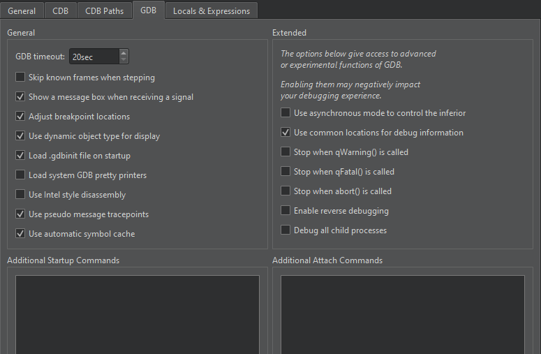

Troubleshooting Debugger
This section lists some typical problems that you might encounter while debugging and solutions to them.
Cannot Launch Debugger
Some anti-virus applications do not allow debuggers to retrieve data. For example, on Windows, launching the debugger might fail with the following message if the Avira AntiVir is installed on the development PC: The inferior stopped because it received a signal from the operating system. Signal name:? signal meaning: Unknown signal.
Some versions of Avira AntiVir Desktop-Products have known issues in various development environments, including Qt Creator. To fix the problem, Avira instructs you to update to version avipbb.sys 10.0.22.22. For more information, see Restricted Usability of IDE/Debuggers since 2010-12-08.
On some devices, such as Wacom Tablets, running processes might stop the debugger from launching. Stop all running processes and then relaunch the debugger.
Debugger Does Not Hit Breakpoints
You might have created a release build that does not have debug information. A GNU Compiler Collection (GCC) debug build has the -g option on the compiler command line. Check that this option is present in the Compile Output. If it is not, adjust your build settings in the Projects mode.
Debugger Does Not Work
If the debugger does not work properly, try the following:
- Make sure you use at least Qt Creator 3.0.1
- Select the
 (Run) button to verify that the build and run kit selector picked a runnable target and you can run the application.
(Run) button to verify that the build and run kit selector picked a runnable target and you can run the application. - Make sure the debugger is set up properly.
- In the Debug mode, select View > Views > Debugger Log to open the Debugger Log view. Browse the contents of the pane on the right hand side to find out what went wrong. Always attach the contents of the pane to debugger-related questions to the Qt Creator mailing list (qt-creator@qt-project.org) or paste them to a code pasting service before asking questions in the IRC (on the #qt-creator channel at Libera.Chat).
Note: Error 135 usually means that a dependent DLL cannot be found.
Pointer Variable Members Are Not Displayed Directly
When you use the Locals and Expressions views to inspect a pointer variable and expand the variable tree item, another tree item level is displayed. To directly display the members of the pointer variable, select Dereference Pointers Automatically in the context menu in the Locals and Expressions views.
If you cannot view variables at all, check that you selected a debug build configuration.
Structure Members Are Not Sorted According to Structure Layout
By default, structure members are displayed in alphabetic order. To inspect the real layout in memory, deselect Sort Members of Classes and Structs Alphabetically in the context menu in the Locals and Expressions views.
Built-in Debugger Is Slow During Startup and Runtime
Slowness that is related to the loading of debug information is hard to avoid. The following sections describe some possible solutions.
Caching GDB Symbol Index
When using GDB as backend, you can automatically save a copy of its symbol index in a cache on disk and retrieve it from there when loading the same binary in the future. Select Preferences > Debugger > GDB > Use automatic symbol cache.

Minimizing Number of Breakpoints
Some debugging slowness stems from maintaining breakpoints inside the debugger (under some circumstances all breakpoints need to be inserted and removed again for each step) and the evaluation of expressions after each step. We recommend that you minimize the number of breakpoints and watched expressions.
Cleaning Builds
If out-of-date .pdb files make debugging slower, try a clean build.
Disabling Incremental Linking
Incremental linking can affect debugging. If the Debugger Log view shows the Unable to verify checksum of module message, disable incremental linking.
When using CMake as the build system, add the following line to the project CMakeLists.txt file:
set(CMAKE_EXE_LINKER_FLAGS "${CMAKE_EXE_LINKER_FLAGS} /INCREMENTAL:NO" )
When using qmake as the build system, add the following line to the project .pro file:
QMAKE_LFLAGS_DEBUG += /INCREMENTAL:NO
Debugger Cannot Attach to Running Process on Linux
GDB uses ptrace to attach to running processes. Some Linux distributions do not allow this, which stops all attempts to either directly attach to an existing process or use the Run in terminal option in Qt Creator.
The reasons for this are described in KernelHardening.
However, the usefulness of this security measure seems dubious because this feature can be easily disabled. With root permissions, you can disable the feature temporarily by writing 0 into /proc/sys/kernel/yama/ptrace_scope or permanently by changing the value in /etc/sysctl.d/10-ptrace.conf. Even if you do not have elevated permissions, you can disable the feature later by adding a library that calls prctl(0x59616d61, getppid(), 0, 0, 0);, such as the one in $QTCREATORDIR/lib/libptracepreload.so to the LD_PRELOAD environment.